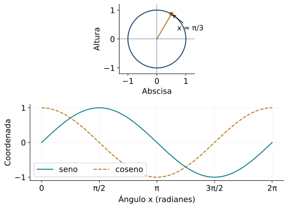
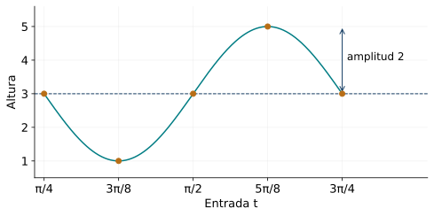
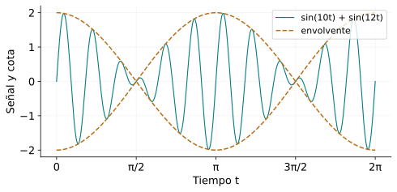
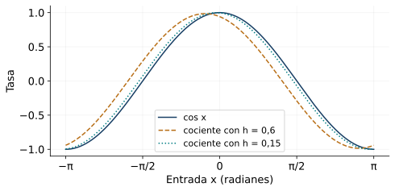

Funciones trigonométricas y modelos periódicos
← Funciones exponenciales y logarítmicas · Índice del libro · Siguiente →
Una marca en el borde de una rueda sube, alcanza una altura máxima, baja y vuelve a su posición inicial. Si la rueda gira uniformemente, cada vuelta repite la misma historia de alturas. Podemos registrar esa historia sobre una recta temporal: mientras el ángulo avanza, la altura dibuja una curva. El círculo proporciona entonces una función capaz de describir una oscilación.
En el capítulo de razones trigonométricas construimos el seno y el coseno mediante coordenadas. Aquí seguiremos sus valores mientras cambia una entrada real. Una unidad en el eje horizontal podrá representar un radián, un segundo o una hora; la fórmula tendrá que explicar cómo se relaciona esa unidad con el giro. Esa relación permitirá recuperar períodos, comparar fases, resolver condiciones sobre una señal y examinar hasta dónde un modelo describe los datos.
Del círculo a una gráfica
En el círculo unitario, el punto alcanzado después de un giro de medida real \(x\), en radianes, tiene coordenadas \((\cos x,\sin x)\). La función seno asigna a cada entrada real la coordenada vertical de ese punto; la función coseno asigna la horizontal. Las vueltas completas permiten continuar ambas reglas sobre toda la recta real, con valores en \([-1,1]\).
Una función \(f\) de dominio real tiene período \(T>0\) cuando \(f(x+T)=f(x)\) para cada real \(x\). Esta igualdad expresa la repetición de toda la regla. Al trasladar su gráfica horizontalmente en \(T\), cada punto encuentra otro de la misma altura. Cuando existe un menor período positivo, lo llamamos período fundamental. El seno y el coseno tienen período fundamental \(2\pi\).
Problema 1. El tiempo entra en el círculo
Un punto recorre el círculo unitario con ángulo \(\theta(t)=(\pi/2)t\), donde \(t\) se mide en segundos y el giro empieza en \((1,0)\). Encuentra sus coordenadas en los primeros cuatro segundos y escribe su altura como función del tiempo.
Solución. En \(t=0,1,2,3,4\), los ángulos son \(0,\pi/2,\pi,3\pi/2,2\pi\). Los puntos correspondientes son \((1,0)\), \((0,1)\), \((-1,0)\), \((0,-1)\) y \((1,0)\). La altura es \(y(t)=\sin((\pi/2)t)\). La entrada de seno es el ángulo; el factor \(\pi/2\) convierte segundos en radianes. Cada cuatro segundos el ángulo aumenta en \(2\pi\) y la altura repite su evolución completa. Por eso el período temporal es cuatro segundos.

Problema 2. Valores y simetrías sobre la recta
Calcula \(\sin(-\pi/6)\), \(\cos(13\pi/3)\) y \(\sin(17\pi/2)\). Relaciona los cálculos con las simetrías y las vueltas del círculo.
Solución. La reflexión respecto del eje horizontal cambia el signo de la coordenada vertical: \(\sin(-\pi/6)=-\sin(\pi/6)=-1/2\). El ángulo \(13\pi/3=4\pi+\pi/3\) termina en el mismo punto que \(\pi/3\), por lo que su coseno es \(1/2\). Finalmente, \(17\pi/2=8\pi+\pi/2\) termina en \((0,1)\) y su seno vale uno. Las identidades que usamos son \(\sin(-x)=-\sin x\), \(\cos(-x)=\cos x\) y la repetición al sumar vueltas enteras.
Problema 3. Un período y el menor período
Comprueba que \(2\pi\) es un período de \(g(x)=\sin^2x\) y encuentra su período fundamental.
Solución. La igualdad \(\sin(x+2\pi)=\sin x\) prueba la primera afirmación. Además, \(\sin(x+\pi)=-\sin x\), así que al cuadrar obtenemos \(g(x+\pi)=g(x)\). El número \(\pi\) también es un período. Para probar que es el menor, observemos que \(g(0)=0\) y sus ceros son exactamente \(k\pi\), con \(k\) entero. Cualquier período positivo \(T\) debe cumplir \(g(T)=g(0)=0\), de donde \(T=k\pi>0\). El menor candidato es \(\pi\), cuya validez ya comprobamos. La elevación al cuadrado reúne las alturas opuestas y acorta la repetición.
Problema 4. Leer variación y extremos
Describe el recorrido, los ceros y los intervalos de crecimiento y decrecimiento de \(f(x)=\cos x\) en \([0,2\pi]\).
Solución. El punto comienza con abscisa uno. Durante la media vuelta superior llega a \(-1\); durante la inferior regresa a uno. Por tanto el coseno decrece estrictamente en \([0,\pi]\) y crece estrictamente en \([\pi,2\pi]\). Se anula cuando el radio es vertical: \(x=\pi/2\) y \(x=3\pi/2\). El recorrido es \([-1,1]\); el mínimo \(-1\) se alcanza en \(\pi\) y el máximo uno en ambos extremos del intervalo. Las dos ramas recorren las mismas alturas en sentidos contrarios.
Propiedades de las funciones del círculo
| Propiedad | Fórmula y condiciones de uso |
|---|---|
| Coordenadas | \((\cos x,\sin x)\) para cada \(x\in\mathbb R\), medido en radianes. |
| Dominio y recorrido | Seno y coseno tienen dominio \(\mathbb R\) y recorrido \([-1,1]\). |
| Simetría | \(\sin(-x)=-\sin x\) y \(\cos(-x)=\cos x\). |
| Vuelta completa | \(\sin(x+2k\pi)=\sin x\) y \(\cos(x+2k\pi)=\cos x\); \(k\in\mathbb Z\). Su período fundamental es \(2\pi\). |
| Media vuelta y cuadrado | \(\sin(x+\pi)=-\sin x\); \(\sin^2x\) tiene período fundamental \(\pi\). |
Pruebas. Véase «Círculo, gráficas y periodicidad» en el apéndice.
Cambiar la escala de una oscilación
El movimiento de una rueda real añade un radio y una altura del centro. La regla se convierte en \(y(t)=d+A\sin(\omega(t-t_0))\). Para \(A>0\) y \(\omega>0\), el eje medio es \(y=d\), la amplitud es \(A\) y el período es \(T=2\pi/\omega\). La amplitud mide la distancia entre el eje medio y cada extremo; la diferencia entre máximo y mínimo vale \(2A\).
El número \(t_0\) localiza un cruce ascendente del eje medio en esta forma con seno y coeficiente positivo. Si usamos \(a\sin(bt+c)+d\) con \(a,b\ne0\), la amplitud es \(|a|\), el período es \(2\pi/|b|\) y el desplazamiento horizontal representado por la fórmula es \(-c/b\). El signo de \(a\) controla la reflexión vertical. Varias fases pueden describir la misma función, porque sumar una vuelta completa al argumento conserva cada valor.
Problema 5. Cinco puntos de una oscilación transformada
Estudia \(f(t)=3-2\sin(4t-\pi)\). Encuentra eje medio, amplitud, período y cinco puntos separados por un cuarto de período.
Solución. Escribimos el argumento como \(4(t-\pi/4)\). El eje medio es tres, la amplitud es dos y el período es \(2\pi/4=\pi/2\). Desde \(t=\pi/4\), un cuarto de período vale \(\pi/8\). Las entradas \(\pi/4,3\pi/8,\pi/2,5\pi/8,3\pi/4\) producen argumentos \(0,\pi/2,\pi,3\pi/2,2\pi\) y alturas \(3,1,3,5,3\). La primera salida desde el eje medio es descendente por el coeficiente \(-2\). El recorrido completo es \([1,5]\).

La frecuencia \(\nu\) cuenta ciclos por unidad de tiempo. Para un período temporal \(T\), se cumple \(\nu=1/T\) y \(\omega=2\pi\nu\). Si el tiempo está en segundos, \(\nu\) se expresa en ciclos por segundo o hertz, y \(\omega\) en radianes por segundo. Una vuelta ocupa \(2\pi\) radianes; ese es el origen del factor de conversión.
Problema 6. De ciclos a radianes por segundo
Una señal tiene frecuencia de cincuenta hertz y regla \(s(t)=\sin(\omega t)\). Encuentra \(\omega\), su período y la primera entrada positiva en que alcanza el máximo.
Solución. La frecuencia angular es \(\omega=2\pi\cdot50=100\pi\) radianes por segundo. El período es \(T=1/50=0{,}02\) segundos. El primer máximo aparece al llegar el argumento a \(\pi/2\), así que \(100\pi t=\pi/2\) y \(t=1/200=0{,}005\) segundos. Es un cuarto de período. Sustituir produce \(\sin(\pi/2)=1\), como exige el máximo.
Problema 7. Una fase escrita como tiempo
Para \(h(t)=4+3\cos((\pi/3)(t-2))\), localiza dos máximos consecutivos y los cruces descendente y ascendente del eje medio entre ellos.
Solución. El período es seis. En \(t=2\), el argumento vale cero y la altura es siete, el máximo. El siguiente máximo ocurre en \(t=8\). Un cuarto de período después del primero, en \(t=7/2\), el argumento es \(\pi/2\) y la función cruza hacia abajo el eje \(y=4\). En \(t=5\) alcanza el mínimo uno, y en \(t=13/2\) el argumento es \(3\pi/2\) y cruza hacia arriba. Las cinco entradas separadas por \(3/2\) describen un ciclo completo.
Problema 8. Dos fórmulas de una misma señal
Prueba que \(u(x)=2\sin(3x+\pi/2)\) y \(v(x)=2\cos(3x)\) representan la misma función. Da otra fase para la primera fórmula.
Solución. La identidad de adición da \(\sin(\alpha+\pi/2)=\sin\alpha\cdot0+\cos\alpha\cdot1=\cos\alpha\). Con \(\alpha=3x\) obtenemos \(u(x)=v(x)\) para cada real. Podemos sumar \(2\pi\) a la fase y escribir \(2\sin(3x+5\pi/2)\). Ambas fases producen la misma altura en cada entrada. La fase queda así determinada hasta vueltas completas cuando la familia y sus otros parámetros están fijados.
Propiedades de los parámetros de oscilación
| Propiedad | Fórmula y condiciones de uso |
|---|---|
| Eje y amplitud | Para \(f(t)=d+a\sin(bt+c)\), \(a,b\ne0\), eje \(d\), amplitud $a$ y recorrido \([d-\lvert a\rvert ,d+\lvert a\rvert ]\); igual para coseno. |
| Período fundamental | $T=2/b$ para una sinusoide con \(a,b\ne0\). |
| Desplazamiento horizontal | \(bt+c=b(t-t_0)\) con \(t_0=-c/b\), para \(b\ne0\). |
| Frecuencias | \(\nu=1/T\) y \(\omega=2\pi\nu\) para una oscilación temporal escrita con frecuencia angular positiva. |
| Fases equivalentes | Sumar \(2k\pi\) al argumento conserva seno y coseno; \(k\in\mathbb Z\). |
Pruebas. Véase «Parámetros de una oscilación» en el apéndice.
Si \(a=0\) o \(b=0\), la regla anterior es constante. Cada número positivo es entonces un período y el conjunto de períodos positivos carece de mínimo. Las fórmulas de período fundamental de la tabla se aplican a las oscilaciones de amplitud y frecuencia angular distintas de cero.
Recuperar una regla desde datos
Si adoptamos una regla sinusoidal, el máximo y el mínimo nos permiten situar el eje medio a mitad de camino entre ambos y medir la amplitud como la distancia hasta cualquiera de ellos. Para recuperar el período necesitamos saber qué extremos corresponden a ciclos consecutivos: dos máximos observados podrían tener otros entre ellos. Las mediciones de posiciones intermedias permitirán examinar tanto esa elección de período como la forma sinusoidal adoptada, porque hay procesos periódicos con curvas distintas. Reconstruir la regla exigirá reunir esa información antes de fijar sus parámetros.
Problema 9. Reconstruir una oscilación desde extremos
Una magnitud alcanza un mínimo de una unidad en \(t=0\) y el máximo siguiente de cinco unidades en \(t=3\) horas. Suponiendo una sinusoide simple, encuentra una regla.
Solución. El eje medio es \((5+1)/2=3\) y la amplitud es \((5-1)/2=2\). En una sinusoide, pasar de un mínimo al máximo siguiente ocupa medio período; por eso \(T=6\) horas y \(\omega=\pi/3\) radianes por hora. Una regla que empieza en el mínimo es \(H(t)=3-2\cos(\pi t/3)\). En cero produce uno y en tres produce cinco. La elección del período usa la hipótesis de extremos consecutivos dentro de esta familia.
Problema 10. La altura de una cabina
Una rueda tiene radio de cinco metros y centro a seis metros del suelo. Da una vuelta uniforme en veinte segundos y la cabina parte del punto más bajo. Modela su altura y encuentra cuándo está al menos a seis metros durante \(0\le t\le20\).
Solución. La altura del centro proporciona el eje medio seis; el radio da amplitud cinco. El ángulo crece con \(\omega=2\pi/20=\pi/10\). La regla \(h(t)=6-5\cos(\pi t/10)\) empieza en un metro, el punto inferior. Pedir \(h(t)\ge6\) equivale a \(\cos(\pi t/10)\le0\). Durante una vuelta, esto ocurre entre \(\pi/2\) y \(3\pi/2\), incluidos. Al convertir los ángulos a tiempo resulta \(t\in[5,15]\) segundos. Los extremos corresponden a las posiciones laterales de la rueda.
Problema 11. Dos señales en las mismas muestras
Se observa una altura igual a cero en todos los tiempos enteros. Compara las reglas \(f(t)=\sin(\pi t)\) y \(g(t)=\sin(3\pi t)\). ¿Qué medición permitiría distinguirlas?
Solución. En cualquier entero \(n\), los argumentos \(\pi n\) y \(3\pi n\) son múltiplos enteros de \(\pi\); ambas salidas son cero. Sus períodos fundamentales son dos y \(2/3\), respectivamente. En \(t=1/2\), la primera produce uno y la segunda \(-1\). Esa medición intermedia distingue las propuestas. Las muestras enteras coinciden también con la función constante cero. El intervalo entre observaciones forma parte de la información necesaria para reconocer un modelo; esta coincidencia de muestras se conoce como aliasing.
Problema 12. Contrastar una propuesta con nuevas mediciones
En los tiempos \(0,3,6,9,12\) horas se miden \(10,12,10,8{,}4,10{,}3\) unidades. Examina la propuesta \(M(t)=10+2\sin(\pi t/6)\) mediante residuos definidos como observación menos predicción.
Solución. Los argumentos son \(0,\pi/2,\pi,3\pi/2,2\pi\) y las predicciones son \(10,12,10,8,10\). Los residuos valen \(0,0,0,0{,}4,0{,}3\). Los tres primeros datos coinciden exactamente con la regla, mientras los siguientes cuantifican sus discrepancias. La propuesta tiene período doce; las mediciones de cero y doce horas difieren en \(0{,}3\). Para decidir si la aproximación es útil necesitamos conocer precisión instrumental, variabilidad del proceso y tolerancia de la aplicación. El modelo matemático repite exactamente sus valores; las observaciones tienen el alcance que les dan esas condiciones de medida.
Propiedades de datos y modelos periódicos
| Propiedad | Fórmula y condiciones de uso |
|---|---|
| Extremos de una sinusoide | Con mínimo \(m\) y máximo \(M>m\), eje \((M+m)/2\) y amplitud \((M-m)/2\). |
| Extremos consecutivos | En una sinusoide simple, mínimo a máximo siguiente ocupa \(T/2\); máximos consecutivos están separados por \(T\). |
| Rueda desde abajo | \(h(t)=d-R\cos(2\pi t/T)\) para radio \(R>0\), centro de altura \(d\) y giro uniforme de período \(T>0\). |
| Residuo | \(r_i=y_i-f(t_i)\); su interpretación usa las unidades y la precisión de las observaciones. |
Pruebas. Véase «Datos y modelos periódicos» en el apéndice.
Resolver dentro de un intervalo
Una altura del seno suele aparecer dos veces durante una vuelta. Cada familia de ángulos vuelve a repetirse al sumar \(2\pi\). Resolver una ecuación exige reunir esas familias y después seleccionar las entradas del intervalo pedido. Si hay una transformación del argumento, conviene transformar también los extremos del intervalo antes de enumerar.
Para \(s\in[-1,1]\), escribimos \(\alpha=\arcsin s\in[-\pi/2,\pi/2]\). Las soluciones de \(\sin\theta=s\) son \(\theta=\alpha+2k\pi\) y \(\theta=\pi-\alpha+2k\pi\). En \(s=\pm1\) las familias representan los mismos puntos. Para \(c\in[-1,1]\), con \(\beta=\arccos c\in[0,\pi]\), las soluciones de \(\cos\theta=c\) son \(\theta=\pm\beta+2k\pi\). En todos estos casos \(k\) recorre los enteros y las repeticiones se cuentan una sola vez.
Problema 13. Dos familias en un argumento doble
Resuelve \(\sin(2x)=\sqrt3/2\) para \(x\in[0,2\pi]\).
Solución. Ponemos \(\theta=2x\), cuyo intervalo es \([0,4\pi]\). En él, las alturas pedidas aparecen en \(\theta=\pi/3,2\pi/3,7\pi/3,8\pi/3\). Dividir por dos da \(x=\pi/6,\pi/3,7\pi/6,4\pi/3\). Todos pertenecen al intervalo original y al duplicarlos recuperamos los cuatro ángulos enumerados. Los extremos cero y \(2\pi\) producen seno cero y quedan fuera de la solución.
Problema 14. Conservar el extremo inicial
Resuelve \(\cos(3t-\pi/2)=0\) en \([0,2\pi)\).
Solución. El coseno se anula en \(\pi/2+k\pi\). De \(3t-\pi/2=\pi/2+k\pi\) resulta \(t=(k+1)\pi/3\). La condición \(0\le t<2\pi\) equivale a \(0\le k+1<6\), así que los valores son \(t=0,\pi/3,2\pi/3,\pi,4\pi/3,5\pi/3\). El cero inicial corresponde a argumento \(-\pi/2\) y debe incluirse. El valor \(2\pi\) también anula la expresión, pero pertenece al extremo excluido del intervalo.
Problema 15. Una cuadrática en el seno
Resuelve \(2\sin^2x-\sin x-1=0\) en \([0,2\pi)\).
Solución. Con \(u=\sin x\in[-1,1]\), la ecuación se factoriza como \((2u+1)(u-1)=0\). Los dos valores posibles, \(u=-1/2\) y \(u=1\), pertenecen al recorrido del seno. La altura uno da \(x=\pi/2\); la altura \(-1/2\) da \(x=7\pi/6\) y \(11\pi/6\). Cada valor verifica la ecuación factorizada y la original. Conservar las dos raíces de la cuadrática mantiene todas las alturas posibles.
Problema 16. Una ecuación con tangente
Resuelve \(\tan x=1\) en \([-\pi,\pi]\).
Solución. La tangente está definida cuando \(\cos x\ne0\), así que dentro del intervalo quedan excluidos \(-\pi/2\) y \(\pi/2\). En la rama central, \(\tan(\pi/4)=1\), y su período fundamental \(\pi\) da \(x=\pi/4+k\pi\). Los únicos valores del intervalo son \(-3\pi/4\) y \(\pi/4\). En ambos, seno y coseno tienen el mismo valor distinto de cero; su cociente es uno. La condición de dominio se conserva al usar esa razón.
Propiedades para ecuaciones trigonométricas
| Propiedad | Fórmula y condiciones de uso |
|---|---|
| Ecuación del seno | \(\theta=\alpha+2k\pi\) o \(\pi-\alpha+2k\pi\), con \(\alpha=\arcsin s\), \(s\in[-1,1]\), \(k\in\mathbb Z\). |
| Ecuación del coseno | \(\theta=\pm\arccos c+2k\pi\), para \(c\in[-1,1]\) y \(k\in\mathbb Z\). |
| Ecuación de tangente | \(\theta=\arctan q+k\pi\), para \(q\in\mathbb R\), \(k\in\mathbb Z\) y \(\cos\theta\ne0\). |
| Sustitución y selección | Al poner \(u=\sin\theta\) o \(u=\cos\theta\), se conserva \(u\in[-1,1]\) y se seleccionan después todas las entradas del intervalo original. |
Pruebas. Véase «Ecuaciones trigonométricas por intervalos» en el apéndice.
Comparar alturas y recuperar ángulos
Una desigualdad trigonométrica selecciona arcos completos del círculo. Sobre cada rama monótona podemos ordenar las alturas y recuperar los ángulos de sus fronteras. Después se reúnen los arcos y se respetan tanto los extremos del intervalo como los puntos donde la función está definida.
Problema 17. Una altura mínima del seno
Resuelve \(\sin x\ge1/2\) en \([0,2\pi]\).
Solución. La recta horizontal de altura \(1/2\) corta el círculo en los ángulos \(\pi/6\) y \(5\pi/6\). El arco superior entre ellos tiene coordenada vertical al menos \(1/2\); el resto queda por debajo. La solución es \([\pi/6,5\pi/6]\). Las fronteras se incluyen por la igualdad permitida. En los extremos del intervalo original el seno es cero.
Problema 18. Una condición estricta sobre el tiempo
Encuentra cuándo \(1+2\cos(\pi t/6)>2\) durante \(0\le t\le12\).
Solución. Restar uno y dividir por dos da \(\cos(\pi t/6)>1/2\). El argumento recorre \([0,2\pi]\). En una vuelta, las coordenadas horizontales mayores que \(1/2\) corresponden a \([0,\pi/3)\cup(5\pi/3,2\pi]\). Multiplicar las entradas angulares por \(6/\pi\) produce \(t\in[0,2)\cup(10,12]\). Los tiempos dos y diez alcanzan exactamente la altura dos y se excluyen; cero y doce producen altura tres y pertenecen al dominio temporal.
Problema 19. Signos separados por puntos excluidos
Resuelve \(\tan x\ge0\) en \([-\pi,\pi]\).
Solución. La tangente es el cociente seno/coseno. Ambos tienen el mismo signo en los cuadrantes primero y tercero; el cociente vale cero en los múltiplos de \(\pi\). En el intervalo pedido resulta \([-\pi,-\pi/2)\cup[0,\pi/2)\cup\{\pi\}\). Los puntos \(\pm\pi/2\) quedan excluidos por coseno cero. El extremo \(\pi\) se incluye como punto aislado: allí la tangente vale cero, mientras en el tramo inmediatamente anterior es negativa.
Las ramas principales permiten definir funciones inversas. El seno restringido a \([-\pi/2,\pi/2]\) es una biyección sobre \([-1,1]\); su inversa es \(\arcsin\). El coseno restringido a \([0,\pi]\) es una biyección sobre \([-1,1]\); su inversa es \(\arccos\). La tangente restringida a \((-\pi/2,\pi/2)\) es una biyección sobre \(\mathbb R\); su inversa es \(\arctan\). Cada elección de rama fija el intervalo en que se recupera el ángulo.
Problema 20. Qué ángulo devuelve una rama principal
Calcula \(\arcsin(\sin(7\pi/6))\) y \(\arccos(\cos(7\pi/6))\).
Solución. El seno de \(7\pi/6\) es \(-1/2\). El único ángulo de \([-\pi/2,\pi/2]\) con ese seno es \(-\pi/6\), de modo que la primera expresión vale \(-\pi/6\). El coseno del ángulo original es \(-\sqrt3/2\); dentro de \([0,\pi]\) ese valor corresponde a \(5\pi/6\). Por eso la segunda expresión vale \(5\pi/6\). Cada composición recupera el representante de su rama principal con la misma coordenada trigonométrica.
Propiedades de orden y ramas inversas
| Propiedad | Fórmula y condiciones de uso |
|---|---|
| Ramas monótonas | Seno crece en \([-\pi/2,\pi/2]\); coseno decrece en \([0,\pi]\); tangente crece en \((-\pi/2,\pi/2)\). |
| Ramas principales | \(\arcsin:[-1,1]\to[-\pi/2,\pi/2]\), \(\arccos:[-1,1]\to[0,\pi]\) y \(\arctan:\mathbb R\to(-\pi/2,\pi/2)\) son las inversas de esas restricciones. |
| Recuperación de entrada | \(\arcsin(\sin x)=x\) en la rama principal del seno; análogamente para coseno y tangente en sus ramas. |
| Selección de arcos | Las desigualdades reúnen las ramas pertinentes; sus fronteras cumplen el signo de igualdad y las condiciones del dominio. |
Pruebas. Véase «Orden y ramas inversas trigonométricas» en el apéndice.
Sumar oscilaciones
Supongamos que dos contribuciones actúan sobre una misma magnitud y que el modelo permite sumarlas, con unidades compatibles. Podemos entonces sumar sus funciones y seguir cómo coinciden sus alturas en cada instante. Si tienen la misma frecuencia angular, unas fases próximas producen refuerzo y otras pueden producir compensación; la amplitud resultante dependerá de esa relación. Con frecuencias distintas buscaremos primero un tiempo de repetición común, si existe, y examinaremos después la forma que adquiere la suma durante ese intervalo.
Problema 21. Dos contribuciones de igual frecuencia
Escribe \(s(x)=3\sin x+4\cos x\) como una sola sinusoide y encuentra su recorrido.
Solución. Buscamos \(R\sin(x+\varphi)=R\cos\varphi\sin x+R\sin\varphi\cos x\). Debe cumplirse \(R\cos\varphi=3\) y \(R\sin\varphi=4\). Al sumar cuadrados obtenemos \(R^2=25\), por lo que elegimos amplitud \(R=5\). El ángulo del primer cuadrante con coseno \(3/5\) y seno \(4/5\) es \(\varphi=\arctan(4/3)\). Así, \(s(x)=5\sin(x+\varphi)\) y su recorrido es \([-5,5]\). La amplitud resulta de la fase relativa de las contribuciones.
Problema 22. Una suma con dos frecuencias
Comprueba que \(2\pi\) es un período de \(f(x)=\sin x+\sin(2x)\) y encuentra sus ceros en \([0,2\pi)\). Examina si \(\pi\) también es un período.
Solución. Al sumar \(2\pi\) a \(x\), el primer argumento suma una vuelta y el segundo suma dos; ambas contribuciones se conservan. Usando \(\sin(2x)=2\sin x\cos x\), factorizamos \(f(x)=\sin x(1+2\cos x)\). Los ceros proceden de \(\sin x=0\) o de \(\cos x=-1/2\): son \(0,2\pi/3,\pi,4\pi/3\). Conservamos ambas posibilidades sin dividir por el seno. Para examinar el desplazamiento \(\pi\), tomamos \(x=\pi/6\): \(f(x)=1/2+\sqrt3/2\), mientras \(f(x+\pi)=-1/2+\sqrt3/2\). Esas alturas difieren, así que \(\pi\) falla la condición de período.
Problema 23. Una oscilación rápida y su envolvente
Reescribe \(s(t)=\sin(10t)+\sin(12t)\) como producto. Encuentra una cota variable de su valor absoluto y comprueba un período común.
Solución. La suma de senos da \(s(t)=2\sin(11t)\cos t\). Como \(|\sin(11t)|\le1\), se obtiene \(|s(t)|\le2|\cos t|\). Las curvas \(\pm2|\cos t|\) delimitan una envolvente: la señal queda entre ellas. La amplitud de esa envolvente se repite cada \(\pi\). Al sustituir \(t+\pi\), tanto \(\sin(11t)\) como \(\cos t\) cambian de signo, y su producto conserva el valor. Por tanto \(\pi\) es también un período de la señal. En cero, la envolvente superior vale dos y la señal vale cero; la cota describe un límite que la oscilación alcanza solo en ciertas entradas.

Propiedades de superposición
| Propiedad | Fórmula y condiciones de uso |
|---|---|
| Frecuencia común | \(a\sin\theta+b\cos\theta=R\sin(\theta+\varphi)\), con \(R=\sqrt{a^2+b^2}>0\), \(\cos\varphi=a/R\), \(\sin\varphi=b/R\). |
| Suma de senos | \(\sin u+\sin v=2\sin((u+v)/2)\cos((u-v)/2)\) para \(u,v\) reales. |
| Período común | Si \(T>0\) es período de \(f\) y de \(g\), también es período de \(f+g\); su período fundamental puede ser menor. |
| Cota de envolvente | $(t)(t)(t)$. |
Pruebas. Véase «Superposición de oscilaciones» en el apéndice.
Examinar una tasa de cambio
En una gráfica, el cociente entre el cambio de altura y el cambio de entrada mide una tasa media. Para el seno, desde \(x\) hasta \(x+h\), con \(h\ne0\), esa tasa es
\[D_h(x)=\frac{\sin(x+h)-\sin x}{h}.\]
Al hacer pequeño el intervalo, los cocientes pueden acercarse a un valor determinado. Ese límite es la tasa instantánea, llamada derivada. El seno permite anticipar la idea mediante el círculo y cotas geométricas: el movimiento cerca de una altura extrema tiene una variación vertical más lenta que cerca del eje medio.
Para \(0<|h|<\pi/2\), la comparación de áreas entre un triángulo inscrito, un sector del círculo unitario y un triángulo tangente da \(\cos h\le\sin h/h\le1\). La identidad \(1-\cos h=2\sin^2(h/2)\) y la cota geométrica \(|\sin u|\le|u|\) permiten controlar cuánto difieren esos cocientes de uno. El apéndice desarrolla el argumento y obtiene
\[|D_h(x)-\cos x|\le\frac{|\sin x|}{2}|h|+\frac{|\cos x|}{2}h^2.\]
El miembro derecho tiende a cero con \(h\). Así, la tasa instantánea del seno en \(x\) es \(\cos x\), cuando la entrada está medida en radianes. El capítulo de variación retomará el concepto general y sus reglas.
Problema 24. Comparar tasas cerca del eje y de un extremo
Calcula aproximadamente \(D_h(0)\) y \(D_h(\pi/2)\) para \(h=0{,}1\) y \(h=0{,}01\) radianes. Da cotas de sus diferencias respecto de las tasas instantáneas correspondientes.
Solución. En cero, \(D_h(0)=\sin h/h\).
Sus valores son aproximadamente \(0{,}9983342\) y \(0{,}9999833\). La tasa instantánea es \(\cos0=1\) y la cota anterior da errores a lo sumo \(h^2/2\): \(0{,}005\) y \(0{,}00005\). En el máximo, la tasa media es
\[D_h(\pi/2)=\frac{\cos h-1}{h}.\]
Sus valores son aproximadamente \(-0{,}0499583\) y \(-0{,}0050000\). La tasa instantánea es cero y el error está acotado por \(|h|/2\): \(0{,}05\) y \(0{,}005\). Los decimales están redondeados a siete cifras después de la coma; las garantías proceden de las desigualdades. Para \(h<0\), la primera tasa conserva su valor y la segunda cambia de signo, conforme a la simetría alrededor del máximo.

Propiedades de cambio y aproximación del seno
| Propiedad | Fórmula y condiciones de uso |
|---|---|
| Cotas geométricas | $uu$ y \(0\le1-\cos u\le u^2/2\) para \(u\) real, en radianes. |
| Cociente cerca de cero | \(\cos h\le\sin h/h\le1\) para \(0<\lvert h\rvert <\pi/2\); de ahí \(\lvert \sin h/h-1\rvert \le h^2/2\). |
| Tasa del seno | \(D_h(x)\) tiende a \(\cos x\); su error satisface la cota expuesta para \(0<\lvert h\rvert <\pi/2\). |
| Escala temporal | Para \(y(t)=d+A\sin(\omega(t-t_0))\), la tasa instantánea es \(A\omega\cos(\omega(t-t_0))\) con tiempo y ángulo en las unidades declaradas. |
Pruebas. Véase «Tasas de cambio del seno» en el apéndice.
Ejercicios para trabajar sin profesor
1. Un punto gira en el círculo unitario con \(\theta(t)=\pi t/3\), con \(t\) en segundos. Encuentra su posición en \(t=0,3/2,3,9/2,6\) y el período de su altura.
2. Calcula \(\sin(-5\pi/6)\), \(\cos(19\pi/3)\) y \(\sin(23\pi/2)\).
3. Encuentra el período fundamental de \(\cos^2x\) y justifica que es el menor.
4. Describe recorrido, ceros, extremos y variación del seno en \([-\pi/2,3\pi/2]\).
5. Para \(f(t)=-1+3\cos(2t+\pi)\), determina eje, amplitud, período y cinco puntos separados por un cuarto de período.
6. Una señal tiene frecuencia de veinticinco hertz y regla \(s(t)=\sin(\omega t)\). Halla frecuencia angular, período y primer máximo positivo.
7. Para \(h(t)=2-4\sin((\pi/2)(t-1))\), localiza el cruce descendente en \(t=1\), el mínimo siguiente, el cruce ascendente siguiente y el máximo siguiente.
8. Demuestra \(3\cos(2x-\pi/2)=3\sin(2x)\) y escribe otra fase equivalente.
9. Una sinusoide tiene máximo ocho en \(t=1\) y mínimo siguiente dos en \(t=5\). Propón una regla y declara la hipótesis que fija su período.
10. Una rueda de radio cuatro metros tiene centro a cinco metros del suelo, período doce segundos y parte con la cabina abajo. Encuentra su altura y los tiempos de \([0,12]\) en que está al menos a siete metros.
11. Compara \(\cos(2\pi t)\) y \(\cos(4\pi t)\) en tiempos enteros y en \(t=1/2\). Da sus períodos fundamentales.
12. En los tiempos \(0,2,4,6,8\) se observan \(7,5,3,5{,}2,6{,}8\). Examina \(M(t)=5+2\cos(\pi t/4)\) mediante residuos de observación menos predicción.
13. Resuelve \(\cos(2x)=1/2\) en \([0,2\pi)\).
14. Resuelve \(\sin(3t+\pi/2)=0\) en \([0,2\pi]\).
15. Resuelve \(2\cos^2x+\cos x-1=0\) en \([0,2\pi)\).
16. Resuelve \(\tan x=-1\) en \([-\pi,\pi]\).
17. Resuelve \(\cos x\le-1/2\) en \([0,2\pi]\).
18. Encuentra cuándo \(2+3\sin(\pi t/4)\ge7/2\) durante \(0\le t\le8\).
19. Resuelve \(\tan x<0\) en \([-\pi,\pi]\).
20. Calcula \(\arcsin(\sin(5\pi/4))\) y \(\arccos(\cos(5\pi/4))\).
21. Escribe \(5\sin x-12\cos x\) como una sola sinusoide y encuentra su recorrido.
22. Comprueba un período \(2\pi\) y encuentra los ceros de \(\sin x-\sin(2x)\) en \([0,2\pi)\).
23. Reescribe \(\sin(8t)+\sin(10t)\) como producto. Encuentra una envolvente y comprueba el período \(\pi\).
24. Para \(y(t)=3+2\sin(\pi t)\), encuentra la tasa instantánea en cero y en \(t=1/2\). Da una condición sobre \(\Delta t\ne0\) que garantice un error menor que \(0{,}01\) al aproximar la tasa de cero por un cociente de cambio.
Soluciones desarrolladas
Ejercicio 1. Una vuelta en seis segundos
Los ángulos son \(0,\pi/2,\pi,3\pi/2,2\pi\) y los puntos son \((1,0)\), \((0,1)\), \((-1,0)\), \((0,-1)\) y \((1,0)\). La altura es \(\sin(\pi t/3)\). Una vuelta angular exige \((\pi/3)T=2\pi\), por lo que \(T=6\) segundos. La conversión mantiene explícita la diferencia entre entrada temporal y argumento angular.
Ejercicio 2. Reducir vueltas y conservar signos
El seno es impar y \(\sin(5\pi/6)=1/2\), de modo que el primer resultado es \(-1/2\). Como \(19\pi/3=6\pi+\pi/3\), el coseno vale \(1/2\). Finalmente, \(23\pi/2=10\pi+3\pi/2\), cuyo seno es \(-1\). Cada reducción conserva el punto final del giro; la reflexión inicial controla el signo de la primera entrada.
Ejercicio 3. El cuadrado del coseno
La media vuelta cambia el coseno de signo y conserva su cuadrado, así que \(\pi\) es un período. Para probar minimalidad, si \(T>0\) es período debe cumplirse \(\cos^2T=\cos^20=1\). Esto sucede exactamente en los múltiplos enteros de \(\pi\), pues la coordenada horizontal tiene valor absoluto uno solo en los extremos horizontales del diámetro. El menor candidato positivo es \(\pi\) y ya se verificó.
Ejercicio 4. Un ciclo que empieza en el mínimo
En \(-\pi/2\) el seno vale \(-1\); crece estrictamente hasta uno en \(\pi/2\) y después decrece hasta \(-1\) en \(3\pi/2\). Su recorrido es \([-1,1]\). Los ceros del intervalo son cero y \(\pi\). El máximo aparece en \(\pi/2\) y los mínimos en los dos extremos. La variación se lee siguiendo la coordenada vertical de cada semicircunferencia pertinente.
Ejercicio 5. Una amplitud sobre un eje negativo
El eje es \(y=-1\), la amplitud es tres y el período es \(\pi\). Escribimos \(2t+\pi=2(t+\pi/2)\) y partimos de \(t=-\pi/2\). Un cuarto de período vale \(\pi/4\). En \(-\pi/2,-\pi/4,0,\pi/4,\pi/2\), el coseno toma \(1,0,-1,0,1\) y las alturas son \(2,-1,-4,-1,2\). El recorrido es \([-4,2]\); la amplitud mide tres desde el eje, aunque la altura máxima sea dos.
Ejercicio 6. Convertir frecuencia y localizar un cuarto de ciclo
Se tiene \(\omega=2\pi\cdot25=50\pi\) radianes por segundo y \(T=1/25=0{,}04\) segundos. La igualdad \(50\pi t=\pi/2\) localiza el primer máximo en \(t=1/100=0{,}01\) segundos. Al multiplicar este tiempo por la frecuencia angular se recupera el ángulo de un cuarto de vuelta.
Ejercicio 7. Sentido del cruce y signo del coeficiente
El período es cuatro y cada cuarto ocupa una unidad de tiempo. En \(t=1\) el argumento vale cero y la altura es dos; el signo negativo del coeficiente hace descendente el cruce. En \(t=2\) el argumento es \(\pi/2\) y se alcanza el mínimo \(-2\). En \(t=3\) aparece el cruce ascendente de altura dos, y en \(t=4\) el máximo seis. En \(t=5\) vuelve el cruce descendente inicial.
Ejercicio 8. Una identidad de fase
La fórmula de diferencia da \(\cos(\alpha-\pi/2)=\cos\alpha\cdot0+\sin\alpha\cdot1=\sin\alpha\). Con \(\alpha=2x\) y multiplicación por tres queda la igualdad pedida. Sumar una vuelta a la fase produce \(3\cos(2x+3\pi/2)\), otra expresión de la misma función.
Ejercicio 9. Extremos consecutivos y escala temporal
El eje es \((8+2)/2=5\), la amplitud es tres y el tiempo del máximo al mínimo siguiente es cuatro. Bajo la hipótesis de una sinusoide simple con esos extremos consecutivos, el período es ocho y \(\omega=\pi/4\). Una regla es \(h(t)=5+3\cos((\pi/4)(t-1))\). En uno da ocho y en cinco da dos. Si hubiera oscilaciones completas intermedias, la distancia temporal observada permitiría otros períodos; la condición de consecutividad fija el elegido.
Ejercicio 10. Alturas por encima del eje medio
La regla es \(h(t)=5-4\cos(\pi t/6)\). Exigir \(h(t)\ge7\) equivale a \(\cos(\pi t/6)\le-1/2\). Durante una vuelta los ángulos correspondientes forman \([2\pi/3,4\pi/3]\). La conversión \(t=6\theta/\pi\) da \(t\in[4,8]\) segundos. En los extremos la altura es exactamente siete; en seis segundos alcanza el máximo nueve.
Ejercicio 11. Coincidencia de muestras con períodos distintos
En cada entero \(n\), los dos cosenos valen uno. Los períodos fundamentales son uno y \(1/2\). En \(t=1/2\), la primera regla vale \(\cos\pi=-1\) y la segunda \(\cos2\pi=1\). Una medición entre los tiempos enteros las distingue. Las muestras enteras admiten además la función constante uno, lo que vuelve a mostrar el papel de la separación temporal de los datos.
Ejercicio 12. Medir las discrepancias
Los argumentos son \(0,\pi/2,\pi,3\pi/2,2\pi\), y la propuesta produce \(7,5,3,5,7\). Restar las predicciones de las observaciones da residuos \(0,0,0,0{,}2,-0{,}2\). La regla tiene período ocho, mientras las observaciones de cero y ocho difieren en \(0{,}2\). La elección de una tolerancia y la precisión de medición permiten valorar la utilidad del ajuste. Los residuos conservan la unidad de la magnitud registrada.
Ejercicio 13. Dos vueltas del argumento
Con \(\theta=2x\), el intervalo es \([0,4\pi)\). El coseno vale \(1/2\) en \(\theta=\pi/3,5\pi/3,7\pi/3,11\pi/3\). Dividir por dos da \(x=\pi/6,5\pi/6,7\pi/6,11\pi/6\). Cada valor pertenece a \([0,2\pi)\) y produce una de las cuatro posiciones angulares de la misma coordenada horizontal.
Ejercicio 14. Enumerar enteros antes de recuperar el tiempo
El seno se anula cuando \(3t+\pi/2=k\pi\). Por tanto \(t=(k-1/2)\pi/3\). Las condiciones \(0\le t\le2\pi\) dan \(1/2\le k\le13/2\), así que \(k=1,2,3,4,5,6\). Las soluciones son \(\pi/6,\pi/2,5\pi/6,7\pi/6,3\pi/2,11\pi/6\). Ninguno de los dos extremos temporales anula la expresión, pues ambos producen seno uno.
Ejercicio 15. Dos coordenadas horizontales posibles
Ponemos \(u=\cos x\in[-1,1]\) y factorizamos \(2u^2+u-1=(2u-1)(u+1)\). Las posibilidades son \(u=1/2\) y \(u=-1\), ambas admisibles. La primera da \(x=\pi/3\) y \(5\pi/3\); la segunda da \(x=\pi\). Sustituir cada coordenada en la factorización produce cero y verifica todas las soluciones.
Ejercicio 16. Repetir una solución de tangente
La rama central contiene \(\arctan(-1)=-\pi/4\). La familia completa es \(x=-\pi/4+k\pi\). Dentro de \([-\pi,\pi]\) quedan \(-\pi/4\) y \(3\pi/4\). Los cosenos son distintos de cero y los cocientes seno/coseno valen \(-1\). Los puntos \(\pm\pi/2\) permanecen excluidos del dominio.
Ejercicio 17. Un arco a la izquierda del círculo
La coordenada horizontal vale \(-1/2\) en \(2\pi/3\) y \(4\pi/3\). En el arco entre ellos es menor o igual que ese valor, así que la solución es \([2\pi/3,4\pi/3]\). Las dos fronteras se incluyen. El ángulo \(\pi\) da el mínimo \(-1\) y pertenece al interior del arco seleccionado.
Ejercicio 18. Convertir un arco cerrado a tiempo
La desigualdad equivale a \(\sin(\pi t/4)\ge1/2\). El argumento recorre \([0,2\pi]\), y el arco correspondiente es \([\pi/6,5\pi/6]\). Multiplicar por \(4/\pi\) da \(t\in[2/3,10/3]\). Las fronteras producen exactamente \(7/2\) en la expresión original y quedan incluidas.
Ejercicio 19. Signo negativo de la tangente
Seno y coseno tienen signos opuestos en los cuadrantes segundo y cuarto. En \([-\pi,\pi]\) esto corresponde a \((-\pi/2,0)\cup(\pi/2,\pi)\). Los extremos cero y \(\pm\pi\) producen tangente cero y quedan fuera de la desigualdad estricta. Los puntos \(\pm\pi/2\) quedan fuera por el dominio.
Ejercicio 20. Representantes de las dos ramas
El seno y el coseno de \(5\pi/4\) valen ambos \(-\sqrt2/2\). El seno recupera su representante \(-\pi/4\) en \([-\pi/2,\pi/2]\), mientras el coseno recupera \(3\pi/4\) en \([0,\pi]\). Por eso las composiciones pedidas valen \(-\pi/4\) y \(3\pi/4\), respectivamente. La coordenada trigonométrica se conserva y la rama fija el ángulo devuelto.
Ejercicio 21. Una fase en el cuarto cuadrante
La amplitud es \(R=\sqrt{5^2+(-12)^2}=13\). Elegimos \(\varphi=-\arctan(12/5)\), de modo que \(\cos\varphi=5/13\) y \(\sin\varphi=-12/13\). La fórmula de adición prueba \(5\sin x-12\cos x=13\sin(x+\varphi)\). El recorrido es \([-13,13]\). El signo negativo de la segunda contribución queda incorporado en la fase.
Ejercicio 22. Factorizar sin perder los ceros del seno
El desplazamiento \(2\pi\) conserva ambas contribuciones. La diferencia se factoriza como \(\sin x(1-2\cos x)\). Por tanto los ceros proceden de \(\sin x=0\) o \(\cos x=1/2\). En \([0,2\pi)\) se obtienen \(0,\pi/3,\pi,5\pi/3\). Sustituir confirma cada cero; mantener la factorización evita perder cero y \(\pi\) al dividir por el seno.
Ejercicio 23. Una envolvente lenta
La identidad de suma da \(s(t)=2\sin(9t)\cos t\). De ahí \(|s(t)|\le2|\cos t|\). Al sumar \(\pi\) a \(t\), los dos factores trigonométricos cambian de signo, así que la señal se conserva y \(\pi\) es un período. La envolvente se repite con ese mismo desplazamiento. En cero, la señal es cero aunque la envolvente superior vale dos; el producto conserva la diferencia entre la cota y el valor efectivo.
Ejercicio 24. Una tasa con cambio de escala
La frecuencia angular es \(\omega=\pi\) y la amplitud es dos. La tasa instantánea es \(2\pi\cos(\pi t)\); vale \(2\pi\) en cero y cero en \(t=1/2\). Para un incremento temporal \(\Delta t\), el cociente en cero es \(Q=2\sin(\pi\Delta t)/\Delta t=2\pi\,\sin h/h\), con \(h=\pi\Delta t\). Si \(0<|h|<\pi/2\), la cota geométrica da \(|Q-2\pi|\le\pi h^2=\pi^3(\Delta t)^2\). Una condición suficiente es \(0<|\Delta t|\le1/100\): entonces \(|h|\le\pi/100<\pi/2\) y el error es a lo sumo \(\pi^3/10000<0{,}01\), usando la cota \(\pi<4\). La desigualdad controla ambos signos del incremento y mantiene las unidades de altura por unidad de tiempo.
Diagnóstico de salida
Relaciona una entrada temporal con su ángulo y sus unidades. Recupera eje medio, amplitud y período de una oscilación; identifica qué datos y supuestos sostienen esos parámetros. Justifica las familias de soluciones y los extremos de un intervalo. Compara dos señales mediante sus fases o sus muestras. Explica cómo una cota del cociente de cambio aproxima una tasa instantánea.
← Funciones exponenciales y logarítmicas · Índice del libro · Siguiente →